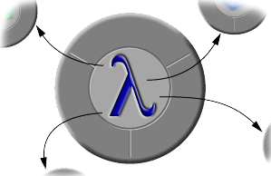

|  | HOC: | A Haskell to Objective-C Binding |
|---|
 |

|
 |

|
|

|
|

|
|
About
HOC is a Haskell to Objective-C binding. In a nutshell, it enables you to use Objective-C objects and frameworks from Haskell, and also enables you to write Objective-C objects in Haskell.
The Haskell interfaces produced by HOC are:
- Strongly Typed: Take advantage of Haskell's sound type inference to help you develop robust, correct Cocoa/GNUstep applications on your first compile.
- Automatically Generated: HOC comes with an interface generator to generate Haskell bindings to Objective-C's objects; use it even with your own custom Objective-C frameworks!
- Haskell-Friendly: We make heavy use of key Haskell features such as type classes and partial evaluation, to ensure that the HOC API is as 'Haskell-like' as possible.
You can use HOC to write full-blown GUI applications using Mac OS X's advanced Cocoa framework.
News
Friday, 14 May 2004:
HOC
0.2 released.
Thursday, 2 Jan 2003:
HOC
0.1 released. See the full
release announcement, or download it
here.
License
In the spirit of the Haskell and Mac OS X open-source communities, HOC is provided under the liberal BSD license.